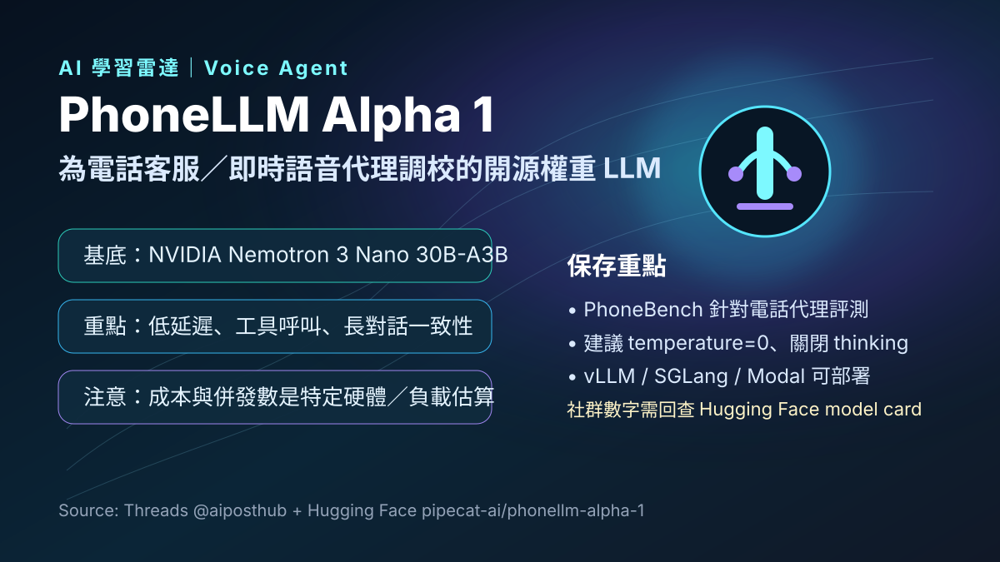

Threads｜AI郵報：PhoneLLM Alpha 1，為低延遲電話語音代理打造的開源權重模型

一句話摘要
PhoneLLM Alpha 1 值得保存，因為它把語音代理的焦點從「模型多會深度思考」移到「電話場景能不能低延遲、穩定 tool calling、長對話不跑題」，代表 voice agent 可能開始進入專用小模型與基礎建設優化的競爭階段。
來源脈絡
- Threads 作者：AI郵報（@aiposthub）。
- 貼文主張：PhoneLLM Alpha 1 是專門為 Voice Agent 打造的開源模型，面向電話、客服、預約、外呼等需要即時回應的場景。
- 官方模型頁：Hugging Face `pipecat-ai/phonellm-alpha-1`。
- 開發者：Daily／Pipecat team。
- 授權：BSD 2-Clause；基於 NVIDIA Nemotron Open Model License 衍生工作。
模型定位
Hugging Face model card 將 PhoneLLM Alpha 1 描述為 open-weights model for voice agent use cases。當它搭配 STT 與 TTS 模型、並透過 Pipecat 這類框架串接時，可用於：
- 金融服務、醫療、零售、旅宿等客服來電。
- 電話預約、訂位、查詢、外呼等多輪語音代理任務。
- 需要快速回覆、穩定工具呼叫與明確指令遵循的 conversational workload。
這裡的重點不是讓模型每次都進行長鏈推理，而是讓電話對話的 agent 在使用者講完後可以快、短、準地接上。
技術規格重點
官方 model card 保存到幾個關鍵規格：
- 基底模型：NVIDIA Nemotron 3 Nano 30B-A3B BF16。
- 架構：Hybrid Mamba-Transformer mixture-of-experts，30B total parameters、約 3.5B active parameters。
- 訓練方式：NVIDIA NeMo framework 的 full-parameter supervised fine-tuning。
- Context length：262,144 tokens。
- 語言：English。
- 建議推論設定：temperature=0，並關閉 thinking（`enable_thinking=false`）。
- 部署：vLLM、SGLang，或 Modal AutoEndpoints；需 `trust_remote_code=True`。
PhoneBench 與評測視角
Pipecat 團隊也同步提出 PhoneBench v1，用來評估 LLM 是否適合電話 agent。它不是只看一般知識題，而是把下列語音代理能力放進評測：
- 電話對話風格。
- tool call accuracy。
- say / do consistency：不要嘴上說已完成，但實際沒有呼叫工具。
- factual grounding。
- conversation coherence。
- authentication 與 escalation discipline。
- caller outcome。
這個評測方向很重要：voice agent 的好壞不是單純看模型榜單，而是看它在多輪任務裡是否能可靠地完成「聽懂 → 查詢 / 呼叫工具 → 簡短回覆」。
延遲與成本：社群數字要保留
Threads 貼文提到 PhoneLLM 可對標 GPT 5.6 Terra、延遲約 1/3、成本約 1/18，並估算約 `$0.0025 / 分鐘`。歸檔時需要補上官方 model card 的限制條件：
- model card 寫的是 PhoneLLM performs on par with GPT 5.6 Terra, but 94% cheaper and with 1,300ms faster P95 time-to-first-token。
- 單請求 TTFT P95 在 B200 上可低於 100ms。
- 在 Modal B200 估算中，44 processes per B200、等同 88 agent processes pinned to each B200 node。
- 以 Modal B200 成本、region pinning、70% utilization 等假設換算，model card 寫出的 agent-minute 成本約為 `$0.00025`，不是無條件通用價格。
因此這些成本與併發數字應視為「特定硬體、特定 workload、特定部署最佳化」下的估算，而不是所有使用者都能直接得到的固定價格。
對 AI 學習雷達的保存價值
PhoneLLM Alpha 1 指向一個實務趨勢：語音代理未必需要每輪都用最大模型深度推理。電話客服、預約、訂位與外呼的核心價值，是低延遲、穩定工具呼叫、長對話一致性，以及可預估的每分鐘成本。若這類 open-weights 專用模型持續成熟，voice agent 的部署門檻可能會從「昂貴 API 串接」逐步轉向「可自託管、可垂直微調、可用成本曲線最佳化」的工程題。
原始連結
Threads：
https://www.threads.com/@aiposthub/post/DckzkgWEUQa
Hugging Face：
https://huggingface.co/pipecat-ai/phonellm-alpha-1
NVIDIA Nemotron 3 Nano：
https://huggingface.co/nvidia/NVIDIA-Nemotron-3-Nano-30B-A3B-BF16